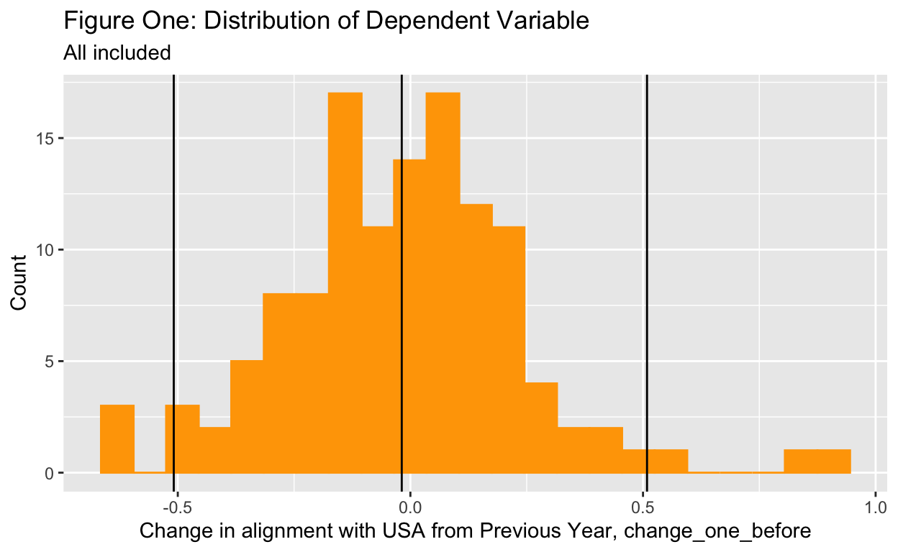
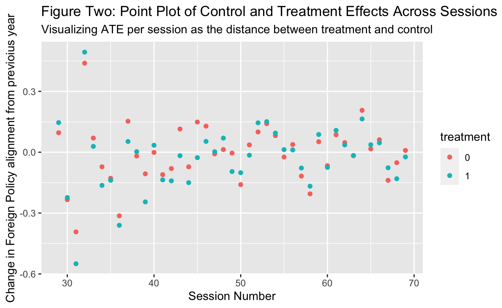
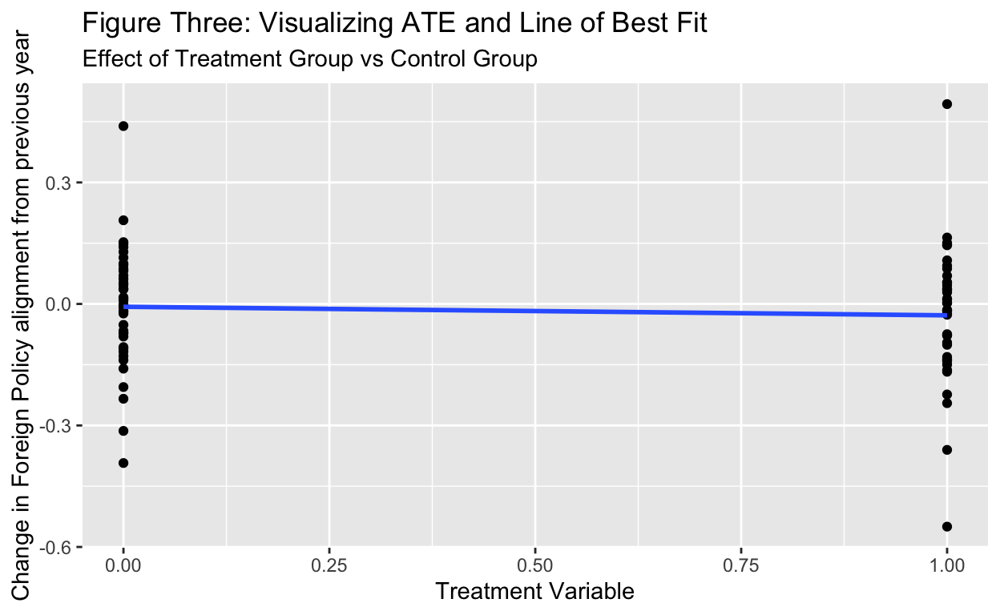
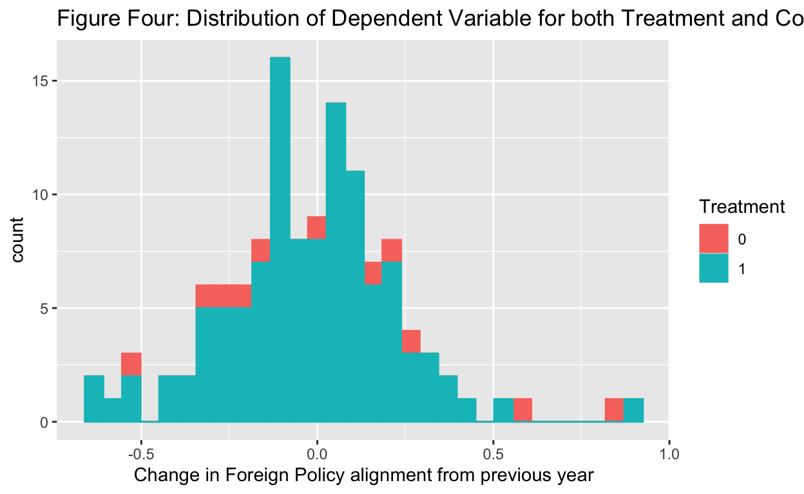

A GOV 50 Final Project on the impact on US aid on US and aid-receipient foriegn policy alignment
This paper will explore the relationship between a country’s foreign-policy preferences and the amount of aid that country receives from the United States by looking at data that is derived from session 29-69 of the United Nations General Assembly. Ultimately the question that interests me is does US provision of aid make the recipients of aid more inclined to the support of the US-led liberal world order?
The underlying foreign policy preferences of a state are a central concern in international relations literature- “perhaps the most fundamental issue” in the discipline (quoted in Chelotti et al 2022). It is of great interest to be able to predict which factors affect whether a state is likely to support one foreign policy over another. A state’s preferences play a part in guiding how a state acts, but these preferences are not a “not directly observed and thus need to be inferred from observable behavior”(Bailey et al 2017). Thus many turn to votes in the United Nations General Assembly as a place to observe state behavior and attempt to operationalize and quantify state preferences. UNGA votes are an attractive option primarily because “they are comparable and observable actions taken by many countries at set points in time”(Bailey et al 2017).
However, it is crucial to emphasize that there might be some important differences between a state’s underlying preference and how a state chooses to vote in the UNGA. A state’s foreign policy preference might be just one among a number of factors that affect that state votes. For instance, while a country might vote the same way as the Unite States on all resolutions in the UNGA, other factors such as strategic calculation or coercion might be at play. That is to say, just because the voting patterns of a pair of countries align, it is not necessarily the case that that the preferences of these two countries aligns. For example, there is some evidence for US practice of using the IMF and World Bank to buy support from other member states for its position on votes in the United Nations General Council (Dreher and Strum 2012). While some analysis (another is Dreher et al 2008) gives a robust treatment of the questions regarding the effects of different types of aid, they are still interested in simply in the voting coincidence of the US and a recipient of its aid. However interesting this sort of analysis is, my paper aims to do something a bit different than a focus on vote-buying relationship between the the US and other countries but rather on the effect of US aid on underlying state-preference.
Myresearch question is this: Do the state preferences of countries that receive US aid become more aligned with those of the US? My central hypothesis is that when the US commits to giving a country aid, it becomes more likely that the state preferences between these two countries align. I hypothesize this because all in all the flow of money from one country to another might provide an avenue for further socialization of those in power of those two countries. Such socialization effects are often hypothesized in a constructivist understanding of the world, in which international organizations are not only a conduit for state preferences, but also mold them(for example, Chelotti et al 2022). A second hypothesis that I am interested in testing is whether or not the recipients of greater levels of US aid are more likely to align, and align to a greater degree with the US than recipients of lower amounts of US aid. The null hypothesis is that variation in the foreign policy alignment between the the US and other countries is due to random chance and not to the amount of aid that a country receives from the US.
Evidence for an increase in alignment between the US and another country would be to see a decrease in the distance between the foreign policy preference of these two countries. Thus evidence for my hypothesis would be to see that following the commitment of aid this distance would decrease, that is we would see a negative change after thes commitment of aid.
In order to analyze this effect I use two pretty cool data sets, one for the dependent variable and one for the independent variable.
My dependent variable, change_one_before, is calculated from estimated measures of state preference (Bailey et al. 2017). This numeric estimate of state preference that Bailey et al provide is the result of a statistical model that uses, in part, Eric Voeten’s data on member-state votes in the United Nations General Assembly . This numeric measure of state-preference is given at a state/session level, that is it provides a single measure of state preference for a given country, in a given year. This ideal point data is more than just measure of state voting coincidence with the US– this data set is one of the things that makes this paper interesting. This ideal point estimate is a ultimately, a measure to “consistently capture the position of states vis-a`-vis a US-led liberal order.”(Bailey et al 2017, pg 431). Bailey et al explicitly emphasize the suitability of their ideal point estimates for analyzing the influence of aid, thus this is an interesting project that is taking this cool data from a statistical model and using it to attempt to learn about the dynamic that unfolds with US aid.
There are a two steps to calculating my dependent variable change_one_before. First, I had to calculate a measure of the alignment of state preference between a given country and the US for a given session. The variable distance_abs is a measure of the alignment of a given country with the US in a given session, arrived at by subtracting the value of the a given countries ideal-point estimate for a particular session from the USA’s ideal-point estimate for that same session, and finally taking the absolute value. Second, I use this distance_abs variable to calculate a measure of how a countries preference alignment with the US has changed from the past session to the current session. Thus, my dependent variable change_distance_one, for a given country in session n is calculated by subtracting the distance_absof session n from the distance_abs value for that country in session n-1.
Data for my independent variable, treatment_any comes from AidData’s Core Research Release Version 3.0 (AidData. 2016.) This variable is a binary variable that is calculated from AidCores’ aggregated data (but this source also provide disaggreated data that is coded much more detail) on the amount of bilateral aid that a country reports that they committed to giving another country. This includes aid that was reported from various sources and is given in constant ($USD for 2011) dollars, and in million to allow for time-series analysis. This raw data is reported under the variable commitment_millions. This data is also reported at a recipient-year level, meaning that it provides the amount that the United State’s committed to a given state in a given year. I follow the practice of assuming that if a country didn’t report aid to a country in a given year then the commitment of aid for that year was in fact zero. I also take a commitment to providing aid as a sufficient variable for analysis though there might be some discrepancy for aid that actually is paid out and aid that is committed, and thus some room for further analysis of aid actually delivered as the treatment condition.
If we look figure one below, we see a plot of the distribution of my dependent variable change_one_before for all sessions. It appears that the variable follows a normal distribution, centered at about -0.01858213, indicated by the center line. This distribution has a standard deviation of about 0.254315, and the black lines at the two extreme indicate the range of two standard deviations.

My research design employs a differences-in-differences approach. I treat the the commitment of aid as the treatment condition and want to investigate its effect on the alignment of state preferences. My independent variable is treatment_any and my depended variable is change_one_before. Both of my variables are determined for country-session pairs.
My independent variable is treatment_any is a binary variable describing whether or not a country was the recipient of any non-zero amount of US foreign aid in the preceding year. The control is no aid commitment reported as 0, and receiving aid is the treatment reported as 1. Said differently, I lag the treatment variable to make it so that for a given session n, a country is counted as being in the control group if and only if it received a commitment for aid in the the year before that session. Lagging the time of the of the commitment by one year is to provide the opportunity to observe an effect of treatment, whose effect’s we might miss if we weren’t to lag treatment.
My dependent variable ischange_one_before is a numeric variable describing the change in foreign policy alignment with the United States from the previous year to the current year. For a given country in session n we can calculate the difference in how that countries alignment with the United States has changed from the previous session, n-1. There is room for some confusion that should be preempted, an increase in alignment would be indicated by a negative value for change_one_before, because this would indicate a decrease in the distance between the foreign policy preferences of the US and a given country.
To calculate the difference in differences we can then first take the average change among all countries in the control group and subtract it from the average change of all countries in the treatment group. This gives us an estimated average treatment effect. We can also run a regression of the values
I work under the assumption that in a given session all countries will experience, on average parallel trends through time. Thus, if we observe a decrease in the distance from the USA for countries that are in the treatment group that is relatively higher than the decrease that we observe for those in the treatment, this would be evidence for my hypothesis. That is a statistically significant negative ATE would be evidence for my hypothesis.
In summary my findings through the proposed difference in difference approach are rather mixed and inconclusive. While the regression that I arrive it does predict that on average the commitment of any amount of bilateral aid from the US to another country is correlated with a foreign-policy preference convergence between the US and that country, this prediction is not statistically significant and care should be taken to not construe any of my suggestions as casual inferences.
Table one below displays the data that I use in my main analysis, data that I calculated from the two data sets mentioned in section two.
| Session | Treatment | Control | Session ATE |
|---|---|---|---|
| 29 | 0.1461095 | 0.0960024 | 0.0501071 |
| 30 | -0.2234955 | -0.2340957 | 0.0106002 |
| 31 | -0.5498011 | -0.3927538 | -0.1570474 |
| 32 | 0.4934236 | 0.4391473 | 0.0542763 |
| 33 | 0.0287593 | 0.0698567 | -0.0410974 |
| 34 | -0.1634173 | -0.0719366 | -0.0914806 |
| 35 | -0.1385286 | -0.1285911 | -0.0099375 |
| 36 | -0.3602780 | -0.3135160 | -0.0467621 |
| 37 | 0.0529427 | 0.1526279 | -0.0996852 |
| 38 | 0.0026936 | -0.0187597 | 0.0214533 |
| 39 | -0.2449655 | -0.1065569 | -0.1384086 |
| 40 | 0.0344542 | -0.0011343 | 0.0355886 |
| 41 | -0.1362060 | -0.1103415 | -0.0258645 |
| 42 | -0.1411189 | -0.0805266 | -0.0605923 |
| 43 | -0.0172668 | 0.1143527 | -0.1316195 |
| 44 | -0.1499210 | -0.0719746 | -0.0779463 |
| 45 | -0.0266862 | 0.1488131 | -0.1754993 |
| 46 | 0.0533366 | 0.1285077 | -0.0751710 |
| 47 | 0.0025069 | -0.0080563 | 0.0105631 |
| 48 | 0.0695588 | 0.0130024 | 0.0565564 |
| 49 | -0.0953044 | -0.0043558 | -0.0909486 |
| 50 | -0.1009616 | -0.1596940 | 0.0587324 |
| 51 | -0.0147717 | 0.0361813 | -0.0509530 |
| 52 | 0.1448578 | 0.0999242 | 0.0449336 |
| 53 | 0.1506442 | 0.1405011 | 0.0101431 |
| 54 | 0.0944441 | 0.0817498 | 0.0126943 |
| 55 | 0.0127614 | -0.0236683 | 0.0364297 |
| 56 | 0.0110982 | 0.0377649 | -0.0266667 |
| 57 | -0.0778431 | -0.1176695 | 0.0398264 |
| 58 | -0.1674563 | -0.2052020 | 0.0377457 |
| 59 | 0.0873205 | 0.0517561 | 0.0355644 |
| 60 | -0.0746797 | -0.0663326 | -0.0083471 |
| 61 | 0.1076419 | 0.0860321 | 0.0216099 |
| 62 | 0.0361027 | 0.0473340 | -0.0112312 |
| 63 | -0.0161274 | -0.0172365 | 0.0011092 |
| 64 | 0.1639873 | 0.2065892 | -0.0426019 |
| 65 | 0.0368399 | 0.0165005 | 0.0203394 |
| 66 | 0.0462498 | 0.0615339 | -0.0152841 |
| 67 | -0.0767460 | -0.1387553 | 0.0620093 |
| 68 | -0.1307388 | -0.0515811 | -0.0791578 |
| 69 | -0.0231590 | 0.0090475 | -0.0322065 |
Figure two below displays a plotted visual representation of data from the above table. We can visualize the average ATE for any given session as the y-value of the treatment point minus the y-value of the control point.

My primary analysis, that is displayed in the figure three below, used a difference in differences approach in order to calculate the average treatment effect. In order to perform this analysis I ran a regression analysis on the treatment as a categorical predictor of the change_one_before. This regression yielded two coefficients, one is an intercept which represents the models prediction for the baseline group, that is the control group. The value of the intercept is indicating that on average countries in the control were slighly more likely to increase their distance from the US. However it is important to keep in mind that For countries in the control this model is rather uninformative, this intercept coefficient is not statistically significant, and in fact is highly arbitrary. For countries in the control this model is rather uninformative.
For for countries in the treatment group the model provides a more clear prediction. The main coefficient of interest is equivalent to the average treatment effect that is reported in table below. This coefficient is -0.0115568. It is negative, thus predicting that for a country that has received any amount of aid we should expect to see the distance between the ideal points of those two counties to decrease by approximately 0.0115568. Recall, this decrease is an indication of increased alignment. However, with a p-value of 0.5391344, this coefficient is also not statistically significant. Thus, with this approach I cannot reject the null hypothesis of any observed difference being due to pure chance. However, in the following section I perform another test, but it too is not statistically significant and cannot be used to derive any causal inferences.

| (1) | |
|---|---|
| (Intercept) | −0.007 |
| s.e. = 0.024 | |
| p = 0.775 | |
| treatment | −0.021 |
| s.e. = 0.034 | |
| p = 0.539 | |
| Num.Obs. | 82 |
| R2 | 0.005 |
| R2 Adj. | −0.008 |
Whatever the results of my analysis might have been if I used a more robust methodology, there is one important thing to note about the use of my dependent variable that limits any causal interpretation that we might derives from its use. For all the virtues of the ideal-point estimates that Dreher et al provide, when used as I have used them, to compare the distance or alignment of two countries, these estimates of state alignment of state preference can give no directional relationship between countries. That is to say, we cannot conclude with certainty, even from a statistically significant result, that the provision of US aid is causing the recipient of aid to move closer to the foreign policy preference of the US. It just as well be that the US is moving closer in foreign policy preference to the countries to which it provides aid.
Because of the failure of my primary analysis to produce a statistically significant result, I performed this second analysis, in part to speak to the second hypothesis that I posed. I hypothesizes that higher amounts of aid could be correlated with an increased probability of alignment with the US. Should we focus on analyzing the relationships between state preference and aid commitments, does a clear statistically significant pattern emerge for countries that are committed higher amounts of aid?
To test for this hypothesis I used I simply too pooled all observation of changes in the alignment with USA. Whereas before I was comparing a difference in difference among treatment and control for a given session, I now attempted to compare the average ATE by simply pooling all data on the changes in alignment with the US with no respect to session. Thus I get a distribution for all observed changes that looks like this second_dist.

I ran two regression models on this data. In the first, displayed below I use the same treatment variable from my main analysis as a categorical predictor of the change_one_before. This regression yields two coefficients, whose values and corresponding p-values are summarized in the table below. Again we see that for countries in the control this model is rather uninformative, as thes intercept coefficient is not statistically significant. The slope coefficient is the coefficient of interest and again is negative, thus predicting that for a country that has received any amount of aid we should expect to see the distance between the ideal points of those two counties to decrease by approximately -1*main_coef. Recall, this decrease is an indication of increased alignment in foreign policy. However, with a p-value of main_coef_p, this coefficient is also not statistically significant.
| (1) | |
|---|---|
| (Intercept) | 0.048 |
| s.e. = 0.077 | |
| p = 0.534 | |
| treatment_any | −0.073 |
| s.e. = 0.080 | |
| p = 0.366 | |
| Num.Obs. | 123 |
| R2 | 0.007 |
| R2 Adj. | −0.001 |
In the second regression, displayed below, I run includes a two categorical variables as predictors, this time in attempt to see if there is any difference between the amount of aid that is provided. In this regression I now include two different categorical predictors. The first being treatment_middle for when a country receives a commitment between 1 and 100 million, and treatment_high for when a country receives a commitment greater than 100 million dollars. This regression yields a couple things of note, first that each of the coefficients of interest are negative, in line with my expectations about the decrease in distance, or said differently the increase in foreign-policy alignment. This might be construed of evidence for my first hypothesis– that there is some decrease in distance when the US commit aid. The coefficients for both of these predictors are bigger in magnitude than that in my firt regresssion analysis. It might also be construed as support for my second hypothesis, as it was seen that perhaps we just needed to label as treatment only higher amount of committed aid in order to see a more pronounced correlation with a foreign policy preference alignment. The coefficient on the treatement_middle predictor is particularly of note. For a country that receives between 1 and 100 million dollars this model predicts an average decrease in distance of 0.09632 points, and this prediction is the closest my analysis has come to statistical significance, with a p-value of 0.190.
| (1) | |
|---|---|
| (Intercept) | 0.063 |
| s.e. = 0.068 | |
| p = 0.355 | |
| treat_middle | −0.096 |
| s.e. = 0.073 | |
| p = 0.190 | |
| treat_high | −0.073 |
| s.e. = 0.090 | |
| p = 0.418 | |
| Num.Obs. | 123 |
| R2 | 0.014 |
| R2 Adj. | −0.002 |
In conclusion, this paper was an exploration of the data that hoped to illuminate the relationship between foreign-policy preferences and US provision of foreign aid. A difference in differences approach treated the the commitment to providing any amount of aid as a treatment condition and analyzed the effect of this condition on the foreign policy alignment of a country with the US. My finding were ultimately mixed and inconclusive. While the regression that I arrive it does predict that on average the commitment of any amount of bilateral aid from the US to another country is correlated with a foreign-policy preference convergence between the US and that country, this prediction is not statistically significant and care should be taken to not construe even a statistically significant result as casual.A second analysis that pooled all available data and treated it as a cross-section analysis of the effect of aid, provided simiarly suggestive but inconclusive results that were no statistically significant. Thus, evidence for my hypothesis is weak, and I can not rule with any interesting level of probability that the result I observed are due to random chance.
While this paper was unable to demonstrate statistically significant evidence for the hypothesis it shows some promise as a project for further exploration. There are ample opportunities to improve on this anlysis. Among them are threats to the inference, namely confounding varibales that are not being controlled for in any of the analysis that I performed. Another is that while the data set that was used for my independent variable is detailed, it is still the limiting factor in the range of sessions that I was able to analyze. This missing data kept me from including in my analysis the exiting state-preference data on the first 28 sessions of the United Nations. Similarly one important thing to note about the use of my dependent variable is that for all the virtures of the ideal-point estimates that Dreher et al provide, when used as I have used them, to compare the distance or alignment of two countries, their estimates give no directional relationship. That is to say, we cannot conclude with certainty, even from a statistically significant result, that the provision of US aid is causing the recipient of aid to move closer to the foreign policy preference of the US. The data and approach that I used for my dependent variable is mute on the point of just how two countries arrived at the new distance of their preference - it does not rule out any combination of both donor and recipient changing their preferences.If I were to have more time to perform this analysis, the most fruitful addition would be to identify and include data on possible confounders and to include this in a multi-variable regression. It is possible that the inclusion of such variables in my regression anlysis might just have produce a substantively similar difference in means as I found in this paper, but one that would display a statistical significance.
Dreher, A., Nunnenkamp, P., & Thiele, R. (2008). Does US Aid Buy UN General Assembly Votes? A Disaggregated Analysis. Public Choice, 136(1/2), 139–164. https://doi.org/10.1007/s11127-008-9286-x
Dreher, A., & Sturm, J.-E. (2012). Do the IMF and the World Bank influence voting in the UN General Assembly? Public Choice, 151(1/2), 363–397. https://doi.org/10.1007/s11127-010-9750-2
Bailey, M. A., Strezhnev, A., & Voeten, E. (2017). Estimating Dynamic State Preferences from United Nations Voting Data. The Journal of Conflict Resolution, 61(2), 430–456. https://doi.org/10.1177/0022002715595700
Chelotti, N., Dasandi, N., & Jankin Mikhaylov, S. (2022). Do Intergovernmental Organizations Have a Socialization Effect on Member State Preferences? Evidence from the UN General Debate. International Studies Quarterly, 66(1). https://doi.org/10.1093/isq/sqab069
Tierney, Michael J., Daniel L. Nielson, Darren G. Hawkins, J. Timmons Roberts, Michael G. Findley, Ryan M. Powers, Bradley Parks, Sven E. Wilson, and Robert L. Hicks. 2011. More Dollars than Sense: Refining Our Knowledge of Development Finance Using AidData. World Development 39 (11): 18911906.
AidData. 2016. AidDataCore_ResearchRelease_Level1_v3.0 Research Releases dataset. Williamsburg, VA : AidData. Accessed on [date]. http://aiddata.org/researchdatasets .